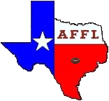

League Information
Official Rules
Weekly Timeline
Commissioners
ATM Bowl Champions
Team Histories
All-Time All-AFFL Teams
Hall of Fame/Shame
Other Resources
NFL.com
ESPN
CNN/SI
The Sporting News
FOX Sports
Fantasy Football Today
KFFL
The Roto Times
Fantasy Football Toolbox
Pigskin Addiction
Fantasy Football Bookmarks
Twitter NFLfeed
Pro Football Reference
Footballguys.com
Fantasy Football Assistant
League Archives
1996
1997
1998
1999
2000
2001
2002
2003
2004
2005
2006
2007
2008
2009
2010
2011
2012
2013
2014